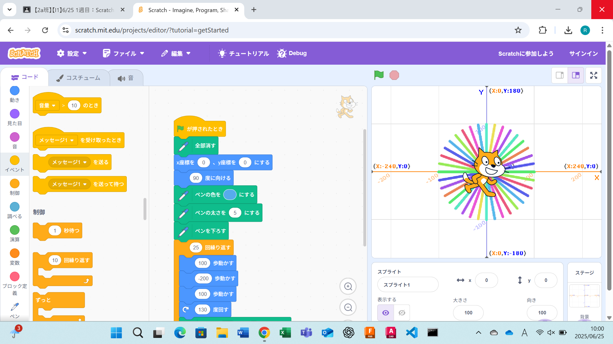
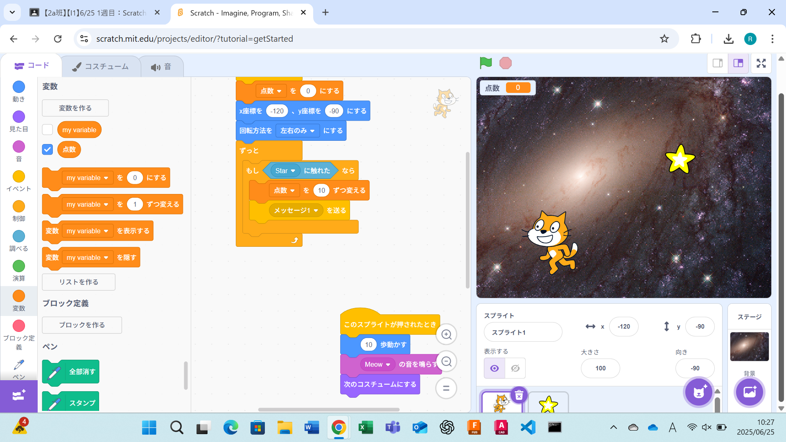

1週目のレポート ： 公大高専１年実習I-1
2a班02番 umenao
第1週目
1-1 サイエンスアート

1.内容
Scratchを使ってサイエンスアートを作った。追加要素でペンを追加することで図形を描くようにプログラムした。
繰り返しのブロックを上手に用いることで、幾何学的な図形を描くプログラムを作るという課題をした。
2.感想
Scratchには、思っていたより多くの機能があるということを知りました。もっとしっかり計算してからプログラムを作れば、より幾何学的な図形を作成できると思いました。
いろいろと応用ができるものだと思ったので、家で他の機能も使ってみたいと感じました。
1-2 ゲーム

1.内容
Scratchを用いてゲームを作った。ゲームでは、星と猫の両方をプログラミングする必要があるため、２つのスプライトを作ってプログラムした。
また、星を取ると点数が増える仕組みも作成した。そして、よりゲームらしくするために星が落ちるスピードと位置をランダムにした。
2.感想
ゲームは、登場してくる一つ一つの物体にプログラムされていて、それが組み合わさることによってできているということが体験して分かりました。
また、if文を使うことで点数を計算することができることも分かり、他のゲームも作ってみたいと思いました。
1-3 ホームページ作成
私のホームページ
1.内容
githubを用いてホームページを作成した。
自分のホームページのURLを確認して、githubを用いてホームページを編集した。
2.感想
githubを用いることで、先生のリポジトリをコピーすることができため、共同作業にはとても便利だと感じました。
また、はじめて自分のホームページを作成したが、そのホームページは誰もが見ることができるため、書く内容には十分気を付ける必要があると思いました。
各ページへのリンク
1週目のレポート
2週目のレポート
3週目のレポート
私のホームページ